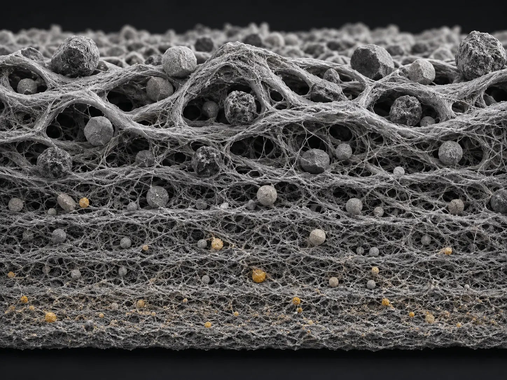
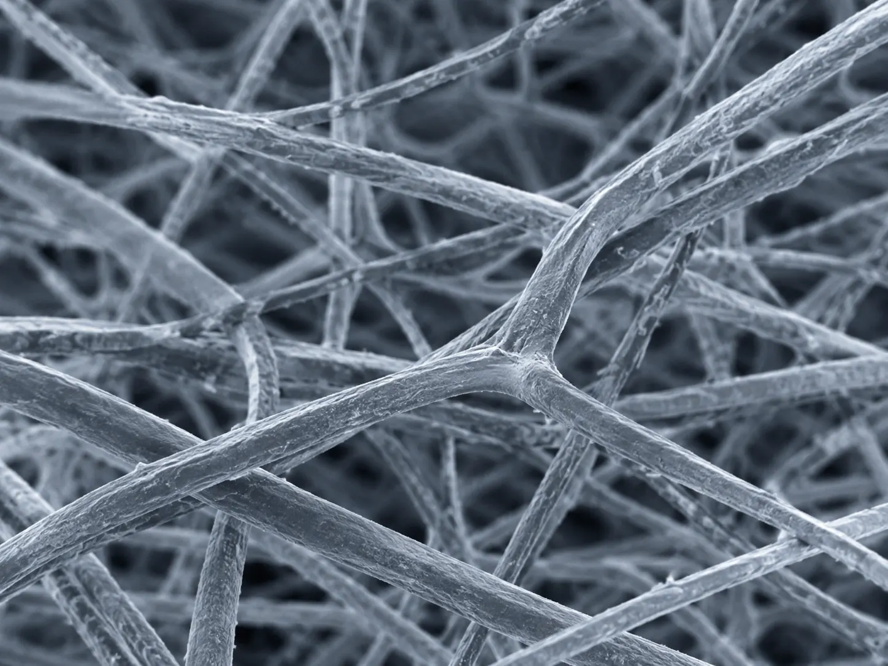
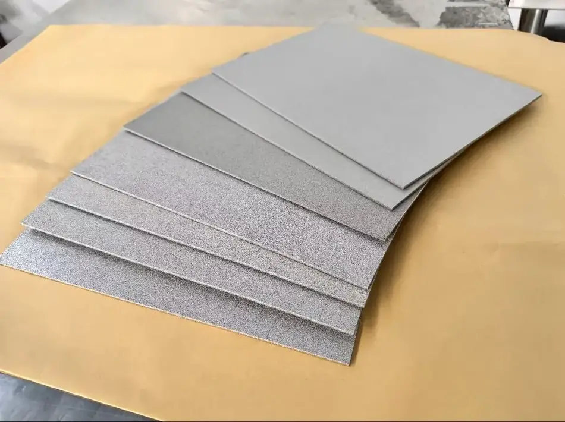

Sintered metal fiber felt filters in depth. Fibers of decreasing diameter are layered so that pore size falls from the upstream face to the downstream face; coarse particles are held near the surface and fine ones deeper in, which is why dirt-holding capacity is high and differential pressure rises slowly. Because the structure is all metal and metallurgically bonded at every fiber contact, it can be cleaned and returned to service.
Where it is used
- Polymer melt and viscose dope filtration
- Polyester film and chemical fiber spinning
- High-temperature gas filtration and dust removal
- Pre-filtration ahead of membranes, vacuum pump protection
- Hydraulic and fuel filtration
- Membrane support layers
| Item | Value |
|---|---|
| Materials | 316L stainless steel; also nickel, Hastelloy, iron-chromium alloys, Monel, duplex alloys |
| Absolute filtration rating | 10–60 µm, standard series; finer and coarser on request |
| Porosity | 72–86% |
| Thickness | 0.30–0.70 mm standard; 1.1 mm in the KIA3K thickened series |
| Service temperature | Up to 480 °C in the process medium; higher with heat-resistant alloys |
| Chemical resistance | Acids, alkalis, organic solvents and pharmaceutical media |
| Fabrication | Cuttable, weldable, pleatable; reinforced, thickened and dense-mesh versions available |
| Series | Absolute rating µm | Thickness mm | Filtration efficiency % | Bubble point Pa | Air permeability at 200 Pa |
|---|---|---|---|---|---|
| 10KIA3 | 10 | 0.30 | 75 | 3700 | 110 |
| 15KIA3 | 15 | 0.37 | 75 | 2470 | 190 |
| 20KIA3 | 20 | 0.45 | 80 | 1850 | 300 |
| 25KIA3 | 25 | 0.61 | 80 | 1480 | 350 |
| 30KIA3 | 30 | 0.63 | 80 | 1230 | 500 |
| 40KIA3 | 40 | 0.66 | 78 | 925 | 620 |
| 60KIA3 | 60 | 0.70 | 86 | 620 | 1200 |
Typical values for reference. Final values are confirmed on the factory inspection report for each lot. Bubble point reflects the largest pore and rises as the rating gets finer; air permeability moves in the opposite direction, which is the trade-off to balance at selection.
Product and application




Send us your operating conditions, and we will send samples.
Temperature, medium, pressure, filtration rating, resistance or porosity — give us the numbers you work with and our engineers will recommend a configuration, quote it and arrange samples for your own testing.